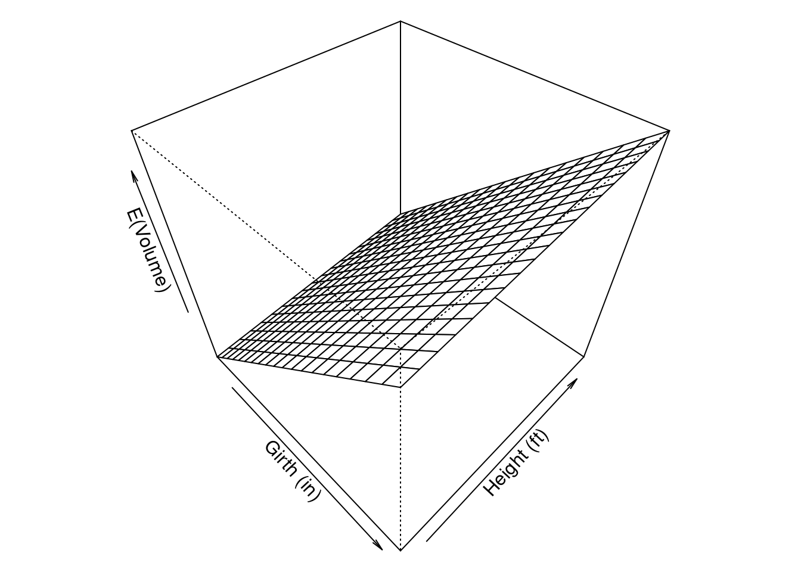
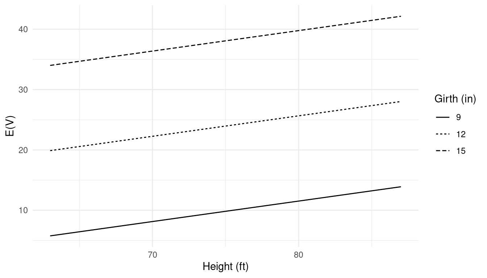
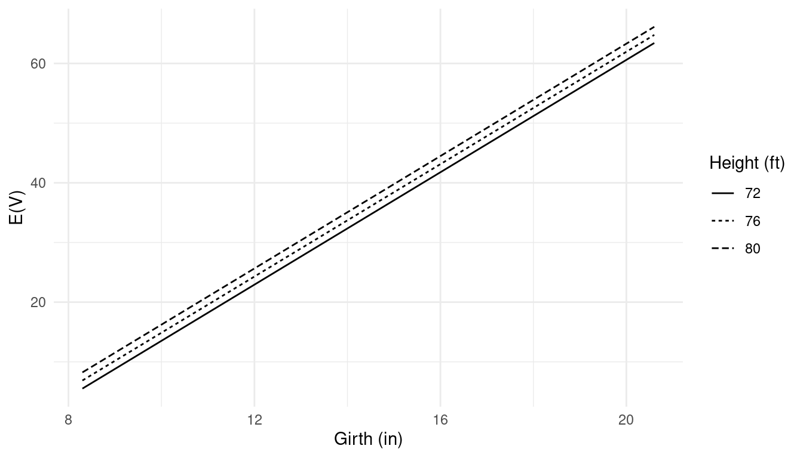
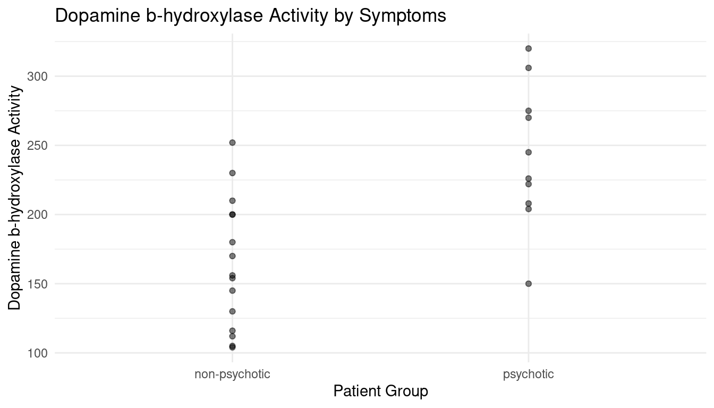

Friday, Jan 13
You can also download a PDF copy of this lecture.
Linear Models
The regression model \[ E(Y) = \beta_0 + \beta_1 x_{1} + \beta_2 x_{2} + \dots + \beta_k x_{k}, \] is a linear model because it is a linear function. But a linear model is linear in the parameters (i.e., \(\beta_0, \beta_1, \dots, \beta_k\)) but not necessarily linear in the explanatory variables (i.e., \(x_{1}, x_{2}, \dots, x_{k}\)). For example, the following are all linear models even though \(E(Y)\) is not a linear function of the explanatory variable(s): \[ E(Y) = \beta_0 + \beta_1\log(x), \ \ E(Y) = \beta_0 + \beta_1 x + \beta_2 x^2, \ \ E(Y) = \beta_1 x_1x_2. \] Note that in some cases \(\beta_0\) can be omitted (or, equivalently, fixed as \(\beta_0\) = 0).
Why is there so much focus on linear models in statistics?
Easier to interpret.
Can sometimes approximate more complex functions.
Sufficient for categorical explanatory variables.
Inferential theory is simpler.
Computational tractability.
Didactic value.
So, we will start with linear models, but will certainly cover a variety of non-linear models.
Parameter Interpretation (Quantitative Explanatory Variables)
In the linear model \[ E(Y) = \beta_0 + \beta_1 x_{1} + \beta_2 x_{2} + \dots + \beta_k x_{k}, \]
the parameter \(\beta_j\) (for \(j\) > 0) represents the rate of change in \(E(Y)\) with respect to \(x_{j}\) assuming all other \(x_{j}\) are held constant.
Example: Assume that \[ E(Y) = \beta_0 + \beta_{1} x_{1} + \beta_{2} x_{2}. \] If \(x_{1}\) is increased to \(x_{1} + 1\), then \[ \beta_0 + \beta_{1} (x_{1} + 1) + \beta_{2} x_{2} = \underbrace{\beta_0 + \beta_{1} x_{1} + \beta_{2} x_{2}}_{E(Y)} + \beta_1 = E(Y) + \beta_1, \] meaning that \(E(Y)\) changes by \(\beta_1\) if \(x_{1}\) increases one unit. Note that in this interpretation it is assumed that \(x_{2}\) does not change when \(x_{1}\) changes, so \(\beta_1\) does not have the same interpretation in \(E(Y) = \beta_0 + \beta_1x_1\) unless \(x_1\) and \(x_2\) are not correlated (e.g., if \(x_1\) represents a randomized treatment). Also we are not necessarily assuming that this is a causal relationship in the sense that changing \(x_1\) causes a change in \(E(Y)\).
Note: From calculus we note that \(\beta_j\) is the partial derivative of \(E(Y)\) with respect to \(x_{j}\), \[ \frac{\partial E(Y)}{\partial x_{j}} = \beta_j, \] which shows that the rate of change of \(E(Y)\) with respect to \(x_{j}\) is constant.
Example: Suppose we have the model \[ E(V) = -57.99 + 0.34 h + 4.71 g, \] where \(V\) represents tree volume (in cubic feet), and \(g\) and \(h\) denote tree girth (in) and height (ft), respectively. If we were to plot \(E(V)\) as a function of both \(h\) and \(g\) then it would form a plane.
 But three-dimensional plots can be difficult to read, and higher-dimensional plots are not practical. But consider that we can still make a two-dimensional plot of we express \(E(V)\) as a function of one explanatory variable while holding the other explanatory variable(s) constant. For example, we can write \(E(V)\) as a function of only \(h\) for some chosen value of \(g\) as \[ E(V) = \underbrace{(-57.99 + 4.71g)}_{\text{constant}} + 0.34h. \] Here I have set \(g\) equal to 9, 12, and 15 to plot \(E(V)\) as a function of \(h\).  Similarly we can write \(E(V)\) as a function of only \(g\) for some chosen value of \(h\) as \[ E(V) = \underbrace{(-57.99 + 0.34h)}_{\text{constant}} + 4.71g. \] Here I have set \(h\) equal to 72, 76, and 80 to plot \(E(V)\) as a function of \(g\).  Note that in both cases the rate of change of \(E(V)\) with respect to one explanatory variable does not depend on the value of the other variable. That may or may not be realistic — more on that later, but for an extreme case consider the model \[ E(Y) = \beta_0 + \beta_1 x_1 + \beta_2 x_2, \] where \(x_1 = x\) and \(x_2 = x^2\) so that we can also write the model as \[ E(Y) = \beta_0 + \beta_1x + \beta x^2. \] We also need to be careful for models where an explanatory variable has been subject to a nonlinear transformation. For example, consider the model \[ E(Y) = \beta_0 + \beta_1 \log_2(x), \] where \(\log_2\) is the base-2 logarithm. Here \(\beta_1\) is the change in \(E(Y)\) if we increase \(\log_2(x)\) by one unit, not \(x\). But it can be shown that \(\beta_1\) is the change in \(E(Y)\) if we double \(x\). We’ll discuss log transformations later in the course.
Indicator Variables and Parameter Interpretation
Indicator (or “dummy”) variables can be used when an explanatory variable is categorical.
Example: Consider the following data from an observational study comparing the dopamine b-hydroxylase activity of schizophrenic patients that had been classified as non-psychotic or psychotic after treatment.

Note: In an introductory statistics course, a so-called “population mean” (\(\mu\)) is what we would call an expected value so that \(E(Y) = \mu\).
Consider two hypothetical population means: \[ \begin{aligned} \mu_p & = \text{expected activity of psychotic patients} \\ \mu_n & = \text{expected activity of non-psychotic patients} \end{aligned} \] Inferences might consider three quantities:
\(\mu_p\) (expected activity for a psychotic patient)
\(\mu_n\) (expected activity for a non-psychotic patient)
\(\mu_p - \mu_n\) (difference in expected activity between psychotic and non-psychotic patients)
Let \(x_i\) be an indicator
variable for psychotic schizophrenics such that \[
x_i =
\begin{cases}
1, & \text{if the $i$-th subject is psychotic,} \\
0, & \text{otherwise}.
\end{cases}
\] Then if we specify the model \(E(Y_i) = \beta_0 + \beta_1 x_i\), where
\(Y_i\) is the dopamine activity of the
\(i\)-th subject, we can also write the
model case-wise as
\[
E(Y_i) =
\begin{cases}
\beta_0 + \beta_1, & \text{if the $i$-th subject is psychotic,}
\\
\beta_0, & \text{if the $i$-th subject is
non-psychotic}.
\end{cases}
\]
Thus the quantities of interest are functions of \(\beta_0\) and \(\beta_1\):
\(\mu_p = \beta_0 + \beta_1\)
\(\mu_n = \beta_0\)
\(\mu_p-\mu_n = \beta_1\)
The interpretion of the model parameters depends on how we define our indicator variable (i.e., the parameterization of the model). If instead we defined \(x_i\) as \[ x_i = \begin{cases} 1, & \text{if the $i$-th subject is non-psychotic,} \\ 0, & \text{otherwise}, \end{cases} \] then \[ E(Y_i) = \begin{cases} \beta_0 + \beta_1, & \text{if the $i$-th subject is non-psychotic,} \\ \beta_0, & \text{if the $i$-th subject is psychotic}. \end{cases} \] and the quantities of interest become
\(\mu_p = \beta_0\)
\(\mu_n = \beta_0 + \beta_1\)
\(\mu_p-\mu_n = -\beta_1\)
Note: Usually, if we have a categorical explanatory variable with \(k\) levels, we need \(k-1\) indicator variables. This is true if \(\beta_0\) is in the model. But suppose we define \[ x_{i1} = \begin{cases} 1, & \text{if the $i$-th subject is psychotic,} \\ 0, & \text{otherwise}, \end{cases} \] \[ x_{i2} = \begin{cases} 1, & \text{if the $i$-th subject is non-psychotic,} \\ 0, & \text{otherwise}, \end{cases} \] and we use the model \(E(Y_i) = \beta_1x_{i1} + \beta_2x_{i2}\). How are \(\beta_1\) and \(\beta_2\) related to \(\mu_p\), \(\mu_n\), and \(\mu_p - \mu_n\)?
Example: Consider the following data from a randomized experiment that examined the weight change between before and after therapy for subjects with anorexia.

Let \(Y_i\) denote weight change in the \(i\)-th subject. Each subject was assigned at random to one of three therapies for anorexia: control, cognitive-behavioral, or family therapy. Suppose we define \(x_{i1}\) and \(x_{i2}\) as \[ x_{i1} = \begin{cases} 1, & \text{if $i$-th subject received cognitive-behavioral therapy,} \\ 0, & \text{otherwise}, \end{cases} \] and \[ x_{i2} = \begin{cases} 1, & \text{if $i$-th subject received family therapy,} \\ 0, & \text{otherwise}. \end{cases} \] Then if we specify the model \[ E(Y_i) = \beta_0 + \beta_1 x_{i1} + \beta_2 x_{i2}, \] we we can also write the model case-wise as \[ E(Y_i) = \begin{cases} \beta_0, & \text{if the $i$-th subject is in the control group}, \\ \beta_0 + \beta_1, & \text{if the $i$-th subject received CBT}, \\ \beta_0 + \beta_2, & \text{if the $i$-th subject received FT}. \end{cases} \] What then might be some quantities of interest (in terms of \(\beta_0, \beta_1, \beta_2\))?